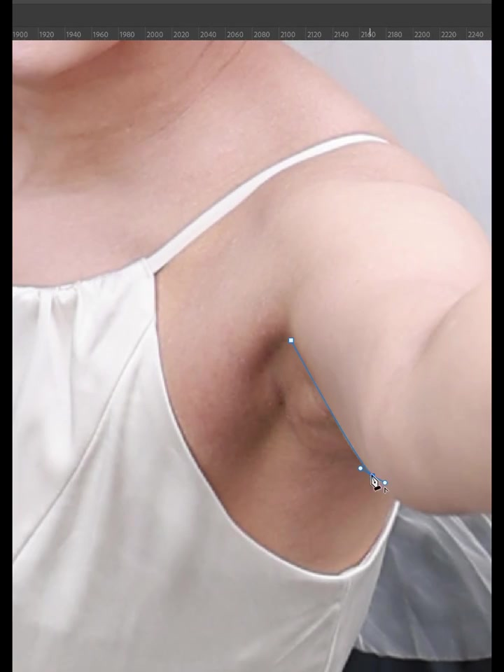
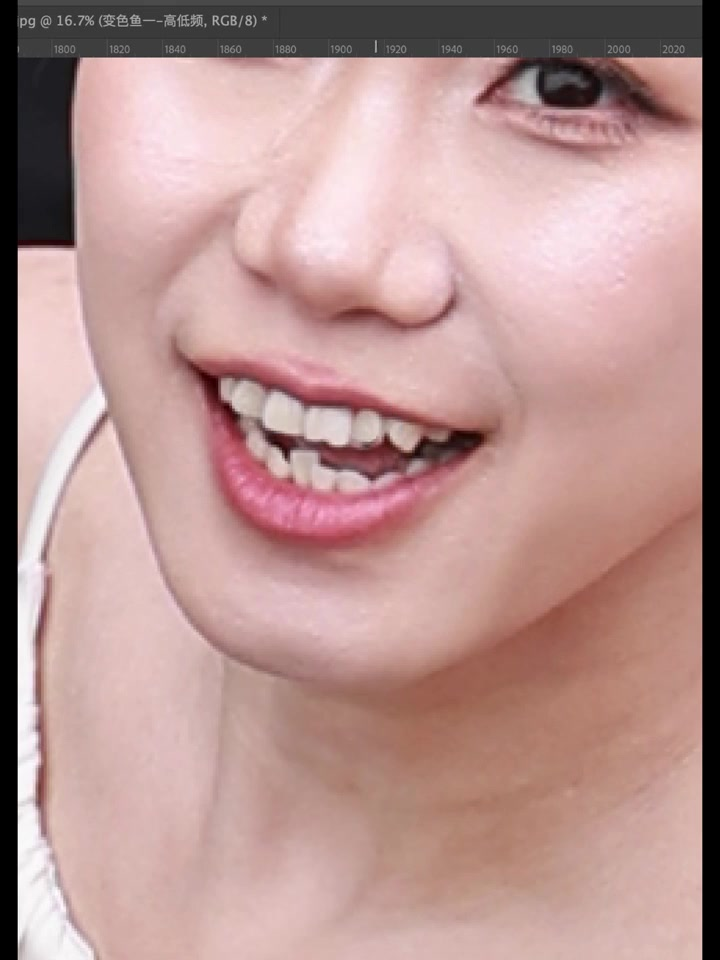
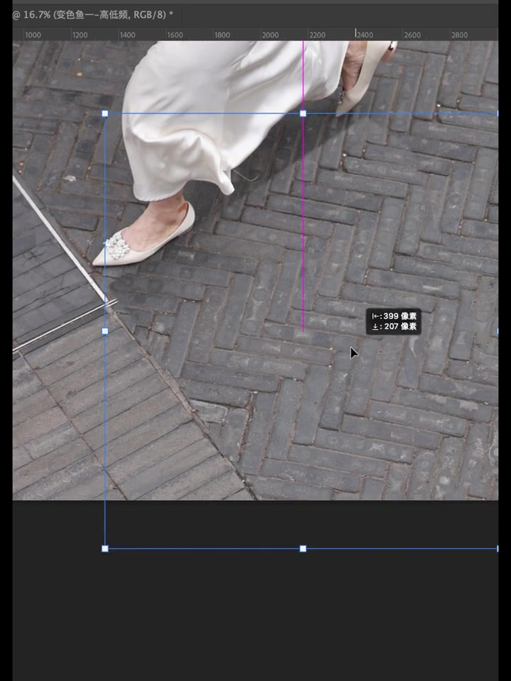
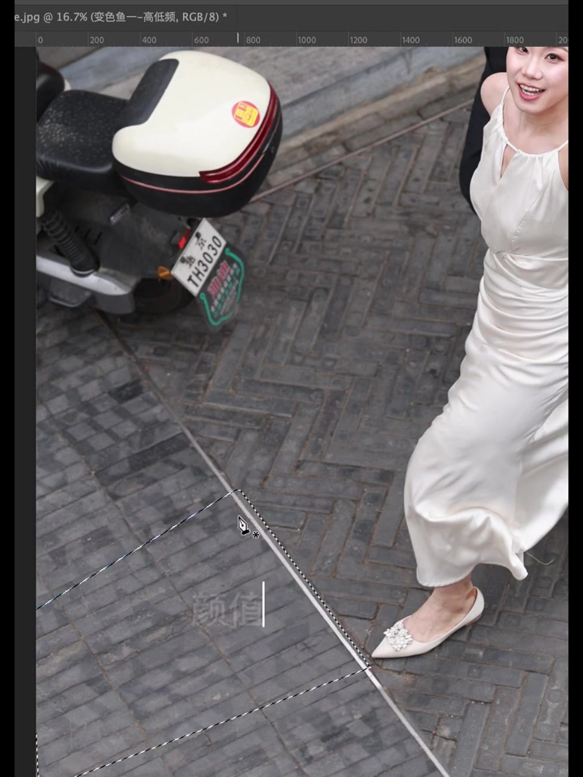
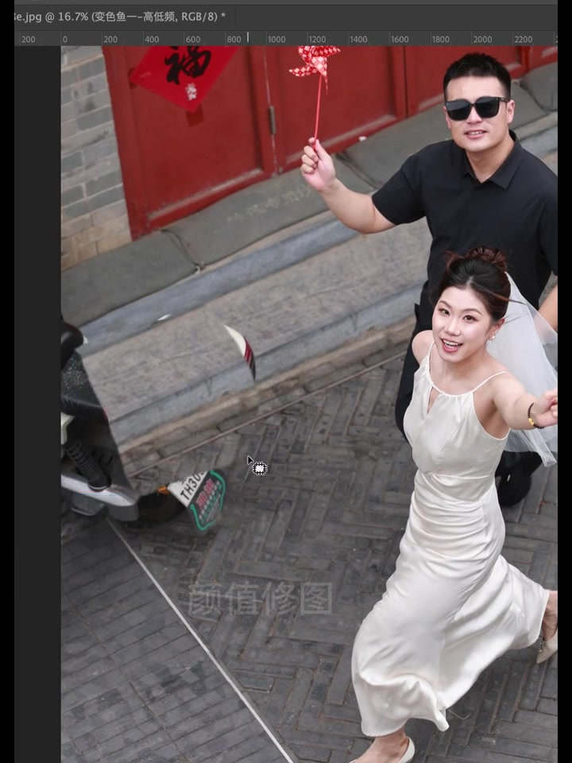
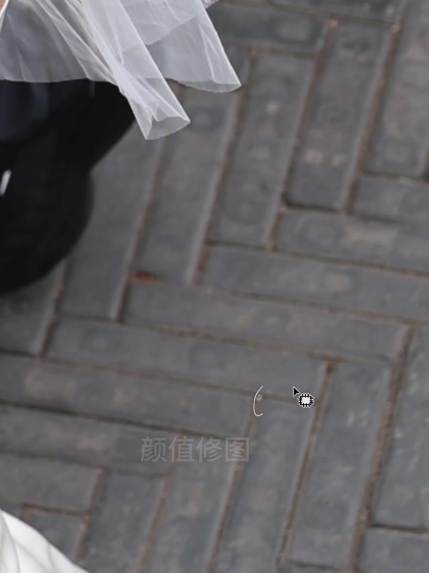
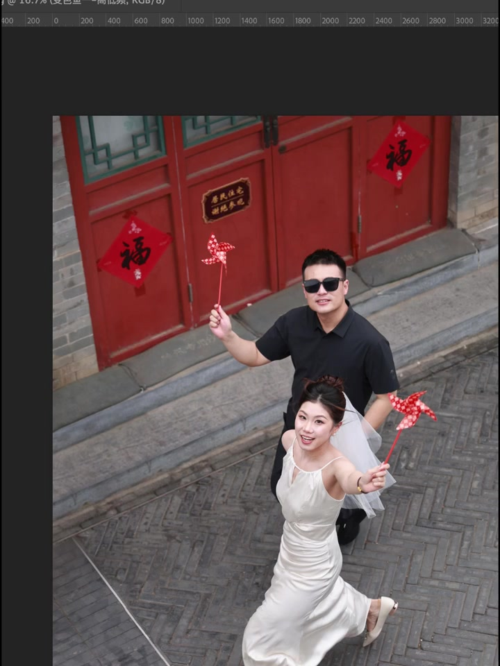
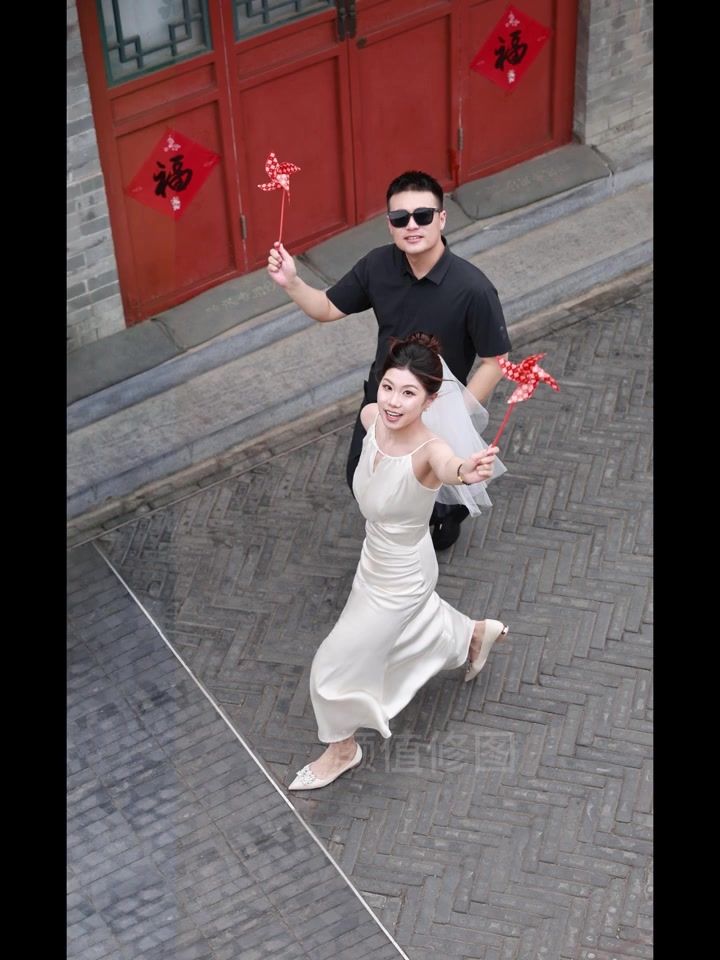

开场就像保洁开工：先擦腋下，再看笑口
画面一上来不是远景，而是腋下与肩带特写：钢笔锚点贴着腋窝褶皱，标题「修图师的尽头是干保洁？」已经把整条片子的玩笑立住——精修日常里大量时间花在「打扫」皮肤局部。
随后切到嘴部大特写，文件名栏写着「变色鱼——高低频」，说明这张片走的是高低频人像流程。牙齿排列、唇缘与下巴纹理被放大到像素级，像在清扫每一处可见瑕疵。


地砖上的「扫地」：钢笔框一块，再克隆修补
镜头落到尖头平底鞋与人字纹地砖。作者用钢笔拉出倾斜矩形路径，框住一块路面；随后出现变换提示（约 616×872 像素），并换上修复/仿制类圆形笔刷，沿砖缝清扫污点与接缝。
这一段把「保洁」从皮肤扩到环境——婚纱照外景里，地砖上的油渍、裂缝与金属边，往往比脸更费时间。
- 钢笔勾选目标地砖区域
- 必要时用变换框核对范围
- 修复/仿制笔刷沿砖缝定点清理

背景保洁升级：电瓶车与车牌要「搬走」
画面拉远，巷景出现：新娘白裙快步前行，后方有电瓶车后箱与绿色车牌「鲁H TH3030」。作者先用钢笔贴着白线/边缘拉路径，再把变换框罩在车牌与车轮区域，像是要把整块干扰物移走或盖住。
水印「颜值修图」叠在地砖上。标题玩笑在这里落地：修图师不仅修脸，还要「清场」——把巷子里的现代杂物打扫干净，才能保住婚纱外景的干净叙事。


小物件也要擦：创可贴、红门斑、风车杆
镜头贴到鞋跟：脚后跟贴着肉色创可贴，光标停在旁边——这种「现场痕迹」在成片里常被修掉，又是一次字面意义的打扫。
随后转向红门与石阶：选区罩住门板斜条、风车红杆附近，用修复类工具抹平纹理杂斑。保洁对象从路面升级到建筑与道具细节。

中景验收：双人风车、红门「福」、谢绝参观牌
约 10.7% 缩放的中景里，新娘持红白风车抬头笑，新郎墨镜黑衫同样举风车；红门贴着「福」字，门上小牌写「居民住宅 谢绝参观」。电瓶车已被处理到不抢戏，地砖与门板更干净——这一帧像是清场后的阶段性验收。

回到人像：鞋跟重塑、额头斑点、鼻侧与褶皱
后半段节奏回到「人」：鞋与脚跟被变换网格罩住，继续去掉创可贴并整理鞋型；新郎额头用选区+修复笔点掉小瑕疵；新娘发顶、耳侧与鼻侧出现细选区或圈注，像在扫最后一点灰尘。
还有一截白裙褶皱特写，圆形标注落在布料上——保洁范围甚至延伸到面料折痕。标题玩笑贯穿始终：尽头不是大特效，而是无数次定点打扫。
黑白检查，再回到彩色终帧
末段切到黑白预览：先看新郎半身，再看新娘俯视笑容，用灰度检查光影与瑕疵是否还「脏」。最后回到彩色全景终帧——巷景干净、人物笑意足，水印「颜值修图」仍在。
